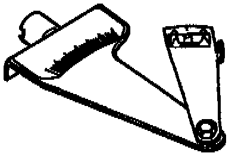

Operation CHARM
: Car repair manuals for everyone.
Русский
Home
>>
Jeep
>>
1997
>>
Grand Cherokee 4WD L6-4.0L VIN S
>>
Repair and Diagnosis
>>
Transmission and Drivetrain
>>
Drive/Propeller Shafts, Bearings and Joints
>>
Drive/Propeller Shaft
>>
Tools and Equipment
Drive/Propeller Shaft: Tools and Equipment
